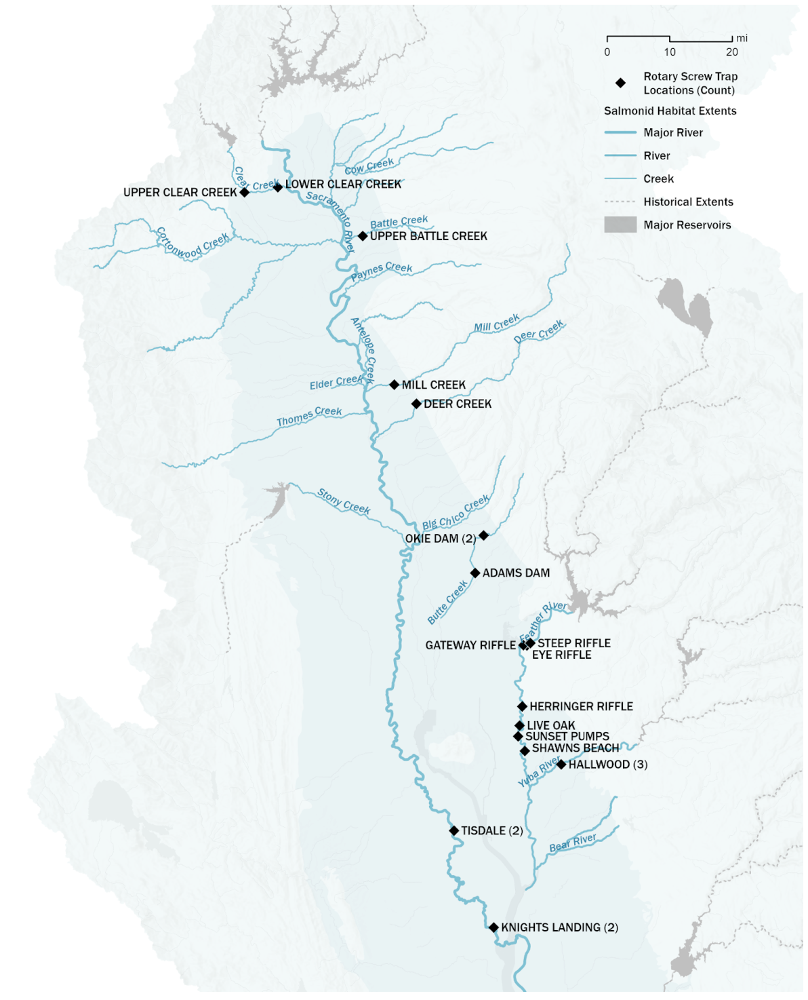

site_overview.RmdThe spring run juvenile production estimate (SR JPE) contains a suite of submodels that rely on different datasets. Rotary Screw Trap (RST) data is used in a number of submodels and is a foundational dataset in the Spring Run Juvenile Production Estimate (SR JPE). This document provides an overview of the RST sites relevant to the SR JPE including a brief description of the site dynamics, sampling protocols, and rationale for decisions about sites included in the SR JPE models.
The SR JPE considers data from 7 tributaries and the mainstem Sacramento river, including:
Each of these tributaries has a unique monitoring setup and number of
rotary screw traps (RSTs) that we can use in the SR JPE model. Data for
the SR JPE is organized by stream, site, and subsite.
stream represents the creek or river where the trapping
sites are located. site represents a unique trapping
location whereas subsite represents the RST positioning
within the site. site group is used as a
helper to group sites that may be more similar than others. For
instance, on the Feather River there are multiple sites that have been
used over time. It is assumed that sites within the Low Flow Channel are
more similar to each other than the sites in the High Flow Channel and
vice versa. Some streams only have one site and some sites only have one
RST. The important difference is that catch from different subsites
within the same site and same year can be added together, whereas catch
from different sites cannot be added together as this would be double
counting.
All RST source data are publicly available through the Environmental Data Initiative (EDI). The table below lists the EDI package for each watershed; full metadata, data dictionaries, and methods documentation can be accessed at the links provided. Note that Battle and Clear creeks share a single EDI package, as do Deer and Mill creeks.
| Watershed | Agency | EDI Package Link |
|---|---|---|
| Battle Creek | USFWS | edi.1509 |
| Butte Creek | CDFW | edi.1497 |
| Clear Creek | USFWS | edi.1509 |
| Deer Creek | CDFW | edi.1504 |
| Feather River | DWR | edi.1239 |
| Mill Creek | CDFW | edi.1504 |
| Sacramento River - Knights Landing | CDFW | edi.1501 |
| Sacramento River - Tisdale | CDFW | edi.1499 |
| Yuba River | DWR | edi.1529 |
*Note about site usage - Any trap not selected for the SR JPE model will still be used in juvenile abundance modeling. The BTSPAS-X juvenile abundance model is a hierarchical basin abundance model that can borrow information from one site when there is no information available at a different site.
The map below shows the location of existing RST sites.

Historically, there were two rotary screw trapping sites though now only Upper Battle Creek (UBC) is active. All fish length-designated as fall-run by the Sheila Greene length-at-date (LAD) charts are considered spring-run at UBC. The barrier weir at Coleman National Fish Hatchery is considered to be fish tight up to 800 cfs, and based on on-the-ground knowledge, flows rarely exceed that level during the spring-run and early fall-run escapement period.
SR JPE Site: Upper Battle Creek (UBC)
The SR JPE modeling team selected UBC as the primary site to use in the SR JPE because it has a longer period of record and is still an ongoing monitoring site.
Lower Battle Creek (LBC) efficiency or catch data is used in fitting the juvenile abundance estimate model (BTSPAS-X) and for supplementary analysis.
Historically, multiple rotary screw trapping sites have been operated on Butte Creek. Currently, only one site is in operation, the Parrott-Phalen Diversion Dam site, and referred to as Butte Creek in results and manuscripts. In some documentation this site may be referred to as Okie Dam though we are in the process of updating this language throughout. Prior to 2015, there was one trap that operated at Adams Dam and two traps at Parrott-Phalen Diversion Dam. Butte Creek operates a rotary screw trap and a fyke trap at Parrott-Phalen Diversion Dam. The fyke trap is in the diversion dam and days when only the fyke trap is fishing (rarely) are not considered reliable.
SR JPE Site: Parrott-Phalen Diversion Dam
The SR JPE modeling team selected Parrott-Phalen Diversion Dam as the primary site to use in the SR JPE because it is the site with the most historical data and has ongoing monitoring. Currently, data is considered complete only when the RST is operating. This means that the few records where only the fyke trap was operating are not currently used in juvenile abundance modelling. In the future, these data may be integrated, though this would require an approach to understand the portion of the river sampled by the fyke trap to better represent effort.
Additional Adams Dam efficiency or catch data may be used in fitting the juvenile abundance estimate model (BTSPAS-X) and for supplementary analysis.
There are two rotary screw trapping sites on Clear Creek - Lower Clear Creek (LCC) and Upper Clear Creek (UCC). There is one trap at each site. All fish length-designated as fall-run by the Sheila Greene length-at-date (LAD) charts are considered spring-run at the Upper Clear Creek trap. There is a separation (picket) weir installed on Clear Creek below the UCC subsite that excludes fall-run from spawning with spring-run and superimposing redds on top of spring-run redds. At the LCC subsite there is no way to tell the difference between spring-run and fall-run fish in the field, and the Clear Creek monitoring program uses the LAD run designations even though there is overlap in the sizes of spring-run and fall-run not captured in the LAD model. At the LCC trap, some fish that are classified as fall-run based on LAD are actually spring-run and vice versa.
SR JPE Site: Upper Clear Creek (UCC)
The SR JPE modeling team selected UCC as the primary site to use in the SR JPE because it is most representative of spring run due to the separation weir.
Lower Clear Creek efficiency or catch data may be used in fitting the juvenile abundance estimate model (BTSPAS-X) and for supplementary analysis. There is a separation weir on Clear Creek that ensures that only spring run Chinook are caught in the UCC trap. This may prove helpful for potential supplementary analysis focused run identification including:
There is only one RST operated on Deer Creek. Depending on flows, the trap may be moved slightly downstream. The Deer Creek site is located in a vegetated area with a steep bank on one side. At high flows this site floods and the RST is hazardous to run (around 1,000 cfs according to 4D permit). The LAD is not considered to be an accurate method for designating run it is especially problematic on Deer Creek due to lower water temperatures and later dates of juvenile emergence and outmigration.
SR JPE Site: Deer Creek
Operation of the Oroville Complex results in two substantially different flow regimes creating two different reaches within the Feather River; the Low Flow Channel (LFC) from the Fish Barrier Dam at river mile (RM) 67.2 to the Thermalito Afterbay Outlet (TAO) at RM 59 and the High Flow Channel (HFC) from the TAO to the confluence with the Sacramento River. Flow in the LFC is strictly regulated (generally about 800 cubic feet per second (CFS)), while the HFC is subject to greater flow fluctuations from 800 up to 40,000+ CFS during the emigration period.
Feather River has three monitoring locations within the Low Flow
Channel (site_group == "feather lfc") and four monitoring
locations within the High Flow Channel
(site_group == "feather hfc"). Monitoring locations within
the Low Flow Channel and High Flow Channel have alternated over time
based on site conditions, safety, and trapping performance; though there
is consistently one site operating within each.
Eye Riffle was the original Low Flow Channel site. Steep Riffle is a highly efficient trap location, though the site presents potential navigation challenges and safety concerns and is not currently fished. Gateway Riffle was used as an alternate site to Steep Riffle until river conditions changed during the 2017 spillway event. Eye Riffle is the current site for the Low Flow Channel. It was originally fished in the main channel and was moved to the side channel location in 2018 due to changing river conditions. All Low Flow Channel locations have one 8-foot trap operating when the site is utilized.
Live Oak was the original High Flow Channel site. Sunset Pumps is below a 6 foot rock weir. Herringer Riffle is currently in operation, and fishes two 8-foot traps in tandem. Herringer Riffle is the only High Flow Channel location above Honcut Creek and therefore flow conditions are only influenced by output from the Oroville Complex rather than additional flow from Honcut Creek.
Historically spawning occurred in the Low Flow Channel and High Flow Channel; however, now the Low Flow Channel supports the majority of spawning activity as less than 5% of spawning occurs below the Low Flow Channel trapping sites.
The new Lower Feather River site (a.k.a Star Bend) at RM 17 below the confluence with the Yuba River was added in 2021 and operates two traps in tandem (rr, rl).
SR JPE Site: Eye Riffle
The SR JPE modeling team selected Eye Riffle as the primary site to use in the SR JPE because it would enable direct integration with the Probabilistic Length At Date (PLAD) model as genetic data are being collected at this site. Additionally, the time series for this site is robust. In years where data are not available at Eye Riffle the dataset can be supplemented with Steep Riffle and Gateway Riffle which are both in the Low Flow Channel.
Other Feather River sites are used in fitting the juvenile abundance estimate model (BTSPAS-X) and for supplementary analysis.
There is one site on Mill Creek where one trap is operated. Depending on flows, the trap may be moved slightly downstream.
Directly above the trap is a fish ladder and point of diversion. The diversion is reconnected with the stream below the trap where there is also a diversion screen. A percentage of flow is diverted through the diversion channel. It is possible that salmon may also be traveling through the diversion channel, bypassing the trap, and reconnecting with the stream below the trap. It is currently unknown how many salmon may be bypassing the trap; though, due to on-the-ground knowledge about salmon behavior, migrating near edges, this has been identified as an important caveat and source of uncertainty. Upcoming efficiency tests will be useful in identifying the number of salmon that are bypassing the trap.
There are very few fall run redds located above the RST at Mill Creek. The majority of Chinook caught in the Mill Creek RST are spring run chinook. The LAD is not considered to be an accurate method for designating run it is especially problematic on Deer Creek due to lower water temperatures and later dates of juvenile emergence and outmigration.
SR JPE Site: Mill Creek
Tisdale and Knights Landing RST sites are used in the development of a mainstem BTSPASX model.
The Knights Landing site is located a few miles downriver of the town of Knights Landing, California, and operates two 8-foot traps (8.3, 8.4) that run in tandem. Due to its upstream proximity to other major tributaries of the Sacramento River, such as the Feather and American Rivers, it is assumed that salmonids captured at the Knights Landing site originate from the upper Sacramento River and its tributaries.
Two traps are operated at the Tisdale site–river right (rr) and river left (rl).
Historically, data were collected at the Hallwood site on the Yuba River. Data collection at this site resumed in 2022 with three RSTs at the site.
There is only one RST location on Yuba River, referred to as Hallwood.
SR JPE Site: Hallwood
The table below is a summary of site selection for the SR JPE. If a site has multiple subsites fishing on the same day these will be added together to get total catch or efficiency data for a day.
| Stream | Site Group | Site | Subsite | SR JPE Site |
|---|---|---|---|---|
| Battle Creek | Battle Creek | UBC, LBC | ubc, lbc | ubc |
| Butte Creek | Butte Creek | Adams Dam, Parrott-Phalen Diversion Dam | adams dam, okie dam 1, okie dam 2, okie dam fyke, okie dam rst | okie dam |
| Clear Creek | Clear Creek | LCC, UCC | lcc, ucc | ucc |
| Deer Creek | Deer Creek | Deer Creek | deer creek | deer creek |
| Feather River | Feather River LFC, Feather River HFC | Eye Riffle, Gateway Riffle, Steep Riffle, Herringer Riffle, Live Oak, Shawns Beach, Sunset Pumps, Lower Feather | eye riffle_north, eye riffle_side channel, gateway main 400’ up river, gateway_main1, gateway_rootball, gateway_rootball_river_left, steep riffle_rst, steep riffle_10’ ext, steep side channel, herringer_east, herringer_upper_west, herringer_west, live oak, shawns_east, shawns_west, sunset east bank, sunset west bank, rr, rl | eye riffle |
| Mill Creek | Mill Creek | Mill Creek | mill creek | mill creek |
| Sacramento River | Knights Landing, Tisdale | Tisdale, Knights Landing, Delta Entry | rr, rl, 8.3, 8.4 | not currently used outside BTSPASX |
| Yuba River | Yuba River | Hallwood | hal, hal2, hal3 | hallwood |
All sites use rotary screw traps (RSTs) to capture and enumerate juvenile Chinook salmon emigrating downstream. Despite operating under a shared general framework, each program has distinct equipment, sampling schedules, and efficiency trial methods reflecting local hydrology, fish populations, and staffing resources.
All monitoring programs share the following core practices:
Trap size and configuration
Trap size varies by stream:
The number of traps also varies:
Monitoring season
The operational calendar differs across streams (though generally Oct/Nov - Jun):
| Stream | Monitoring Season |
|---|---|
| Battle Creek (UBC) | Year-round |
| Clear Creek | November – June |
| Butte Creek | October – June |
| Deer Creek | October – June |
| Mill Creek | October – June |
| Feather River | November – July |
| Yuba River | November – June |
| Sacramento River (Knights Landing) | September – June |
| Sacramento River (Tisdale) | October – June |
Fish measurement subsampling
Measurement protocols differ in the number of fish measured and subsampling thresholds.
Efficiency trial fish source
The origin of fish used for mark-recapture trials differs:
| Stream | Primary fish source for efficiency trials |
|---|---|
| Feather River | Natural-origin fall-run Chinook (primary) |
| Yuba River | Natural-origin Chinook (primary); Feather River Hatchery fish as surrogates when catch is low |
| Clear Creek (LCC/UCC) | Natural-origin Chinook |
| Battle Creek (UBC) | Hatchery-origin fish from Coleman National Fish Hatchery (CNFH) |
| Butte Creek | Natural-origin Chinook from RST and DST |
| Mill Creek | Hatchery-origin fall-run from CNFH |
| Deer Creek | Hatchery-origin fall-run from CNFH |
| Knights Landing | Trap-captured Chinook; CNFH fish when catch is insufficient |
| Tisdale | Trap-captured Chinook; CNFH fish when catch is insufficient |
Efficiency trial frequency and minimum fishing requirement
Protocols for most programs describe an intended trial frequency of once per week during the core monitoring period (typically December–April or May). Mill and Deer creeks describe bi-weekly trials (February–May) and require a minimum of 7 consecutive days of fishing after a release before a trial is considered valid. All other programs require a minimum of 3 consecutive days.
In practice, the number of trials conducted per year varies considerably across sites and years, as shown in the table below. Higher counts at Clear Creek and Feather River reflect multiple RST sites operating concurrently within the same stream and year.
| Stream | Site | First year | Avg trials/year | Min | Max |
|---|---|---|---|---|---|
| Battle Creek | Ubc | 2004 | 13.4 | 1 | 53 |
| Butte Creek | Okie Dam | 2021 | 4.7 | 2 | 8 |
| Clear Creek | Lcc | 2004 | 15.1 | 2 | 49 |
| Clear Creek | Ucc | 2004 | 10.5 | 1 | 33 |
| Deer Creek | Deer Creek | 2023 | 4.2 | 2 | 6 |
| Feather River | Eye Riffle | 1999 | 16.3 | 3 | 29 |
| Feather River | Gateway Riffle | 2013 | 21.0 | 7 | 33 |
| Feather River | Herringer Riffle | 2002 | 18.1 | 3 | 32 |
| Feather River | Live Oak | 1999 | 6.0 | 3 | 9 |
| Feather River | Steep Riffle | 2007 | 24.4 | 8 | 41 |
| Feather River | Sunset Pumps | 2007 | 13.5 | 2 | 21 |
| Mill Creek | Mill Creek | 2022 | 4.0 | 1 | 7 |
| Sacramento River | Knights Landing | 1996 | 8.0 | 1 | 29 |
| Sacramento River | Tisdale | 2012 | 6.0 | 2 | 16 |
| Yuba River | Hallwood | 2023 | 21.0 | 16 | 29 |
Marking method
Bismarck Brown Y (BBY) whole-body stain is used at all sites. Several programs use a second mark to create unique identifiers or to distinguish release groups: Feather River and Yuba River use BBY combined with colored Visible Implant Elastomer (VIE) tags; Battle Creek and Clear Creek combine BBY staining with a fin clip for dual-marked fish; Knights Landing uses BBY or Methylene Blue stain, and VIE tags for hatchery fish; Tisdale alternates between BBY and VIE. Mill, Deer, and Butte creeks use BBY stain only. All programs using multiple marks rotate mark combinations so that a unique mark is not reused within 7 days.
Release distance upstream
Release sites range from 0.2 miles upstream (Upper Clear Creek) to approximately 1 mile upstream (Mill Creek, Deer Creek, Butte Creek, Tisdale). Feather River, Yuba River, and Knights Landing release fish approximately 0.5 miles upstream. Battle Creek and Clear Creek release points vary by RST: 0.2 miles for UCC, 0.4 miles for LCC, and 1.0 miles for UBC.
The table below summarizes the years of catch data and efficiency
trial data available in the rst_catch and
release datasets, respectively.
| Stream | Catch data | Efficiency trial data |
|---|---|---|
| Battle Creek | 1998–2026 | 2004–2025 |
| Butte Creek | 1995–2026 | 2021–2026 |
| Clear Creek | 1998–2026 | 2003–2025 |
| Deer Creek | 1992–2026 | 2023–2026 |
| Feather River | 1997–2026 | 1999–2026 |
| Mill Creek | 1995–2026 | 2022–2026 |
| Sacramento River | 1995–2026 | 1996–2025 |
| Yuba River | 1999–2026 | 2023–2025 |
Catch records extend back to 1992 on Deer Creek and to the mid-1990s for most other streams. Efficiency trial data are available from 1999 onwards on the Feather River and from 1996 on the Sacramento River. Several programs have shorter efficiency trial records due to more recent program start dates: Butte Creek efficiency trials are available from 2021, Mill Creek from 2022, and Deer Creek and Yuba River from 2023.